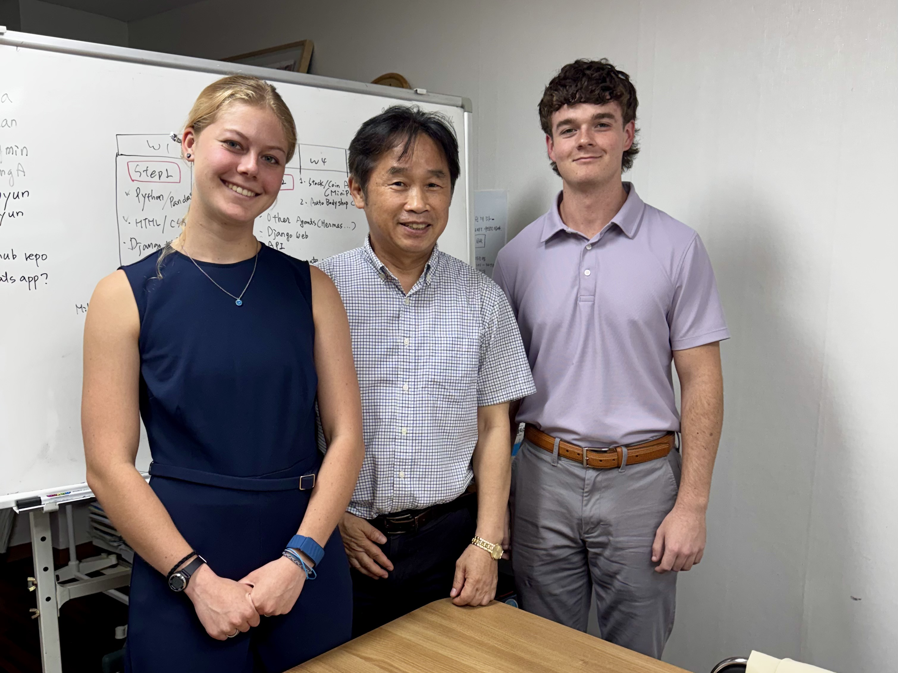

Kira Luna
Nichtawitz
Computer Science student at the University of Florida, Honors Program. Interned with GNC Solution in Seoul, South Korea: bridging tech, global business, and cross-cultural collaboration.
Who I Am
My background, academics, and what brought me to Seoul.
I'm a driven Computer Science student with a passion for building technology that bridges people and information. My background spans fullstack development, product thinking, entrepreneurship, and design, and I've had the unique opportunity to bring that skillset into an international context through my semester and internship abroad in Seoul, South Korea. Outside of code, I love exploring new cities, learning about culture through food, and finding the intersection between technology and human experience.
Experience & Skills
My updated resume, spanning engineering, design, entrepreneurship, and leadership.
- GPA: 3.94
- Courses: Introduction to Software Engineering, Operating Systems, Physics with Calculus I
- Collaborated with a team to build a full-stack machine learning-powered web application using Django, React, and the Kraken cryptocurrency API. Designed and implemented a relational database schema, RESTful API endpoints, JWT authentication, and a live background data-polling engine.
- Implemented an autonomous ML trading engine backed by a LSTM neural network that reads market patterns and executes simulated trades with real-time portfolio tracking.
- Leading frontend development for a startup web application using React, Tailwind, and modern state management, delivering monthly feature updates and UI/UX improvements.
- Managing a frontend development team, enforcing code quality standards (PR reviews, testing, linting) and driving execution with consistent on-time delivery.
- Collaborating with backend and product teams to unite data-driven features (ML predictions) into user-friendly interfaces, while proactively identifying and resolving bugs and performance issues.
- Using fullstack development (Python, JavaScript, React, Tailwind, DuckDB, APIs) to visualize hundreds of thousands of species' data with machine learning, vector embedding, and LLM semantic search.
- Developing a stylized, user-friendly web application to increase biological data accessibility for research and public education through visual and interactive webpages, tools, and data displays.
- Designed presentations for Annika Rockwell, a Nutritionist and Dietitian with a private health practice.
- Created an organization system for several 100+ proprietary slide decks, enabling seamless navigation during consultations.
- Implemented solution across Rockwell Health, increasing efficiency by 600%+.
- Operated front desk at a local H.I.I.T. gym; covered customer service, IT, management, scheduling, sales, logistics, and Spanish/English translation.
- Appointed Chief Technology Officer after taking over IT, managing several online systems, and creating digital phone lines to increase company-wide efficiency across all 3 studios.
Life in Seoul
What I learned culturally during my time abroad.
Professional Growth
Lessons I learned in a South Korean workplace.
When I arrived at GNC Solution, I brought a background in fullstack development and product thinking, but on the ground I had to rapidly learn how to apply those skills inside a Korean organizational culture. Going in, I wanted to develop my global/intercultural fluency, career management skills, and professionalism. I came out having grown in all three in ways, as well as in ways I didn’t fully anticipate.
// New Knowledge & Skills
Technically, I went deep on tools I hadn’t used before: Django on the backend, JWT authentication, RESTful API design, and a live background data-polling engine pulling from the Kraken cryptocurrency API. I also contributed to integrating an autonomous ML trading engine backed by Hermes, which reads market patterns and executes simulated trades with real-time portfolio tracking. Every week, my supervisor recommended something new for me to learn, and I made it a point to follow through on those recommendations, picking up backend and machine learning skills that directly complement my frontend experience.
// The Work Environment
GNC Solution is a small, close-knit team; that intimacy meant I was working directly under Yongchan, the CEO, alongside a fellow UF intern and a few coworkers. The company’s mission is to build useful, modern technologies that fill unique niches in people’s lives, and I got to contribute to that mission firsthand. Day-to-day, my work was largely self-directed: I was responsible for teaching myself relevant skills, setting my own milestones, and holding myself accountable to completing a real, deployable project by the end of the internship.
// Korean Workplace Culture
One of the most valuable parts of this experience was seeing how a Korean workplace balances professionalism with interpersonal relationships. Work discussions were often indirect and formal, while lunches and walks with coworkers were surprisingly direct and personal. Sharing traditional meals, talking about our families and hobbies, and simply spending time together showed me that in Korean professional culture, business is about trust, community, and mutual respect—not just productivity. I also saw how my supervisor’s support style was deeply educational: he provided videos, gave lectures, and passed down his knowledge to support my personal and professional growth.
// Lessons That Will Stay With Me
My time at GNC Solution taught me that working globally requires more than technical skills—it requires curiosity, humility, and a willingness to adapt. I returned with new hard skills in backend development and machine learning, as well as a deeper sense of how to navigate a multicultural workplace, take direction across cultural norms, and build real relationships with people from different backgrounds. These are lessons I’ll carry into every team I work with for the rest of my career.
What I Built
Work products & pictures from my internship project abroad.

What I Strengthened
Three NACE competencies I actively developed during my internship and coursework abroad.